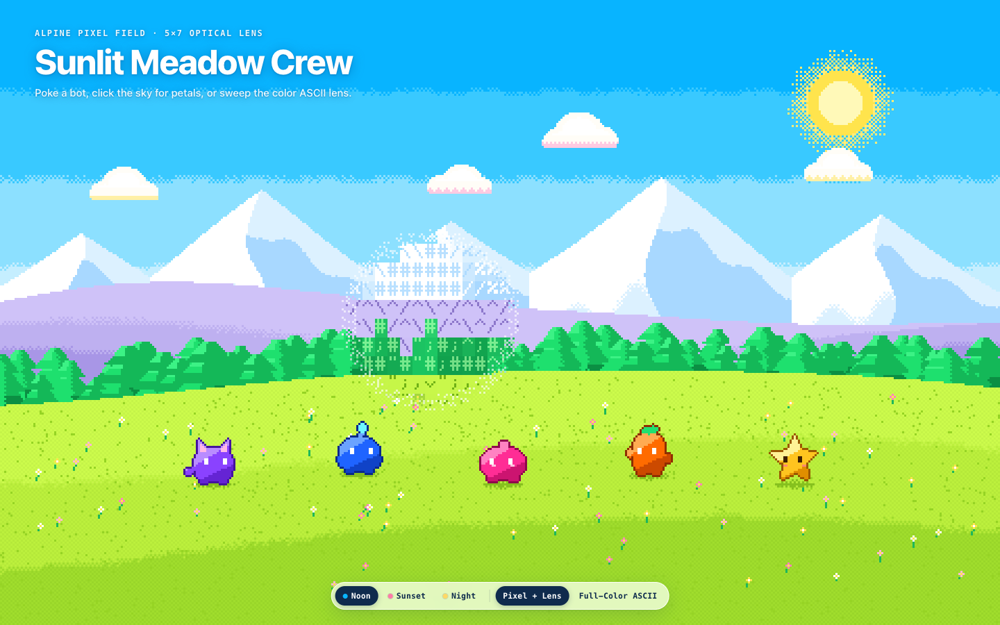
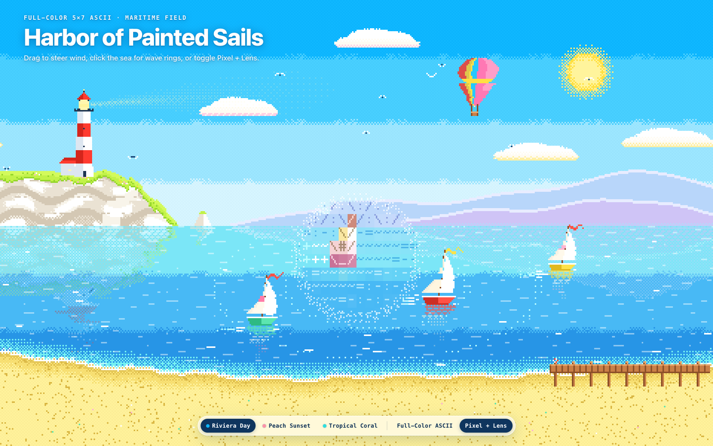
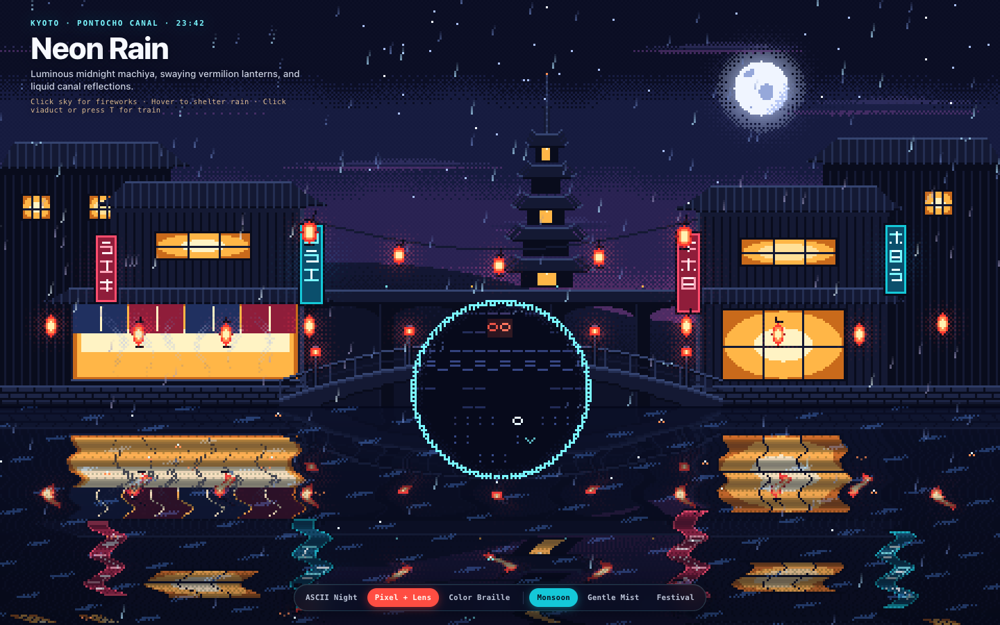
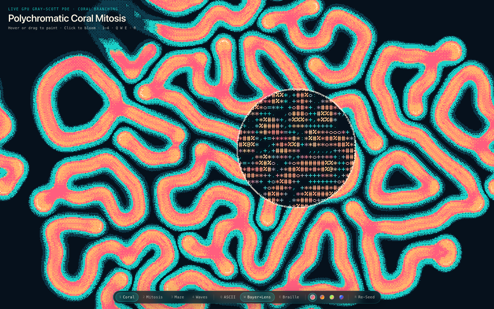
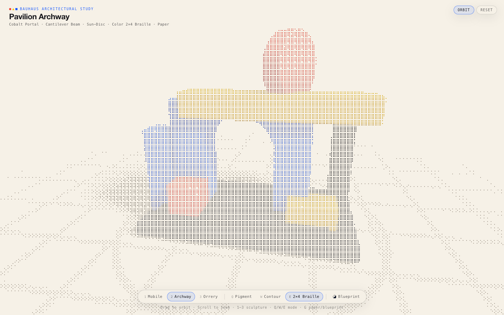

01 / SUNLIT MEADOW · DUSK.BOT + LENSSunlit Alpine Meadow & Pixel Crew
7-plane sunlit alpine diorama with stepped Bayer sky seams, snow peaks, wildflowers, 5 interactive SDF pixel bots (cursor gaze, spring pokes, social glances), Color 5×7 ASCII Lens, Full-Color ASCII mode, Sunset & Starry Campfire Night.
Open 01-sunlit-meadow-crew.html →
02 / COASTAL HARBOR · FULL-COLOR ASCIIHarbor of Painted Sails
Chalk cliffs, rotating lighthouse beam, striped hot-air balloon, pastel sailboats with Bayer foam wakes & water reflections, live drag wind-steering, sea-click wave rings, Full-Color ASCII default + Pixel+Lens & 3 coastal palettes.
Open 02-harbor-painted-sails.html →
03 / KYOTO CANAL · LUMINOUS NIGHTNeon Rain in Pixel Kyoto
Twilight pagoda skyline, glowing machiya windows, swaying vermilion lanterns, scanline-rippled canal reflections, deflected diagonal rain, gliding elevated train, click fireworks, ASCII Night / Pixel+Lens / Color Braille.
Open 03-neon-kyoto-rain.html →
04 / LIVE GPU PDE · GRAY-SCOTTPolychromatic Coral Mitosis
Real-time WebGL2 ping-pong Gray-Scott PDE with live chemical brush painting, 4 biological presets, 4 vivid palettes (incl. Acid Risograph Paper), True-Color ASCII, Bayer+Lens & Color 2×4 Braille.
Open 04-coral-mitosis-rd.html →
05 / BAUHAUS 3D · GALLERY PAPERBauhaus Kinetic Pavilion
Warm gallery paper hosting primary-pigment 3D raymarched sculptures with soft cast floor shadows, orbital drag, Pigment ASCII / Blueprint Contours / Color 2×4 Braille & Midnight Blueprint flip.
Open 05-bauhaus-3d-kinetic.html →